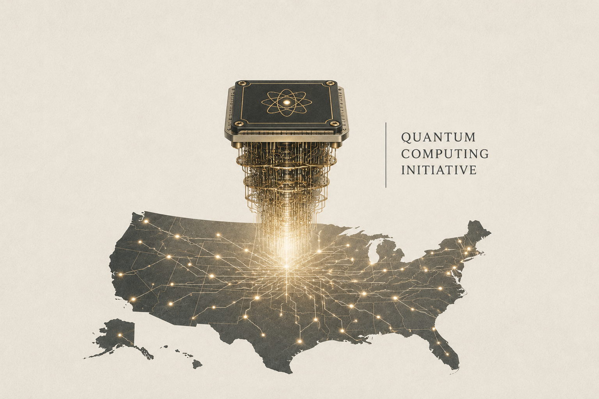

The U.S. Launches a Major Quantum Computing Initiative

Image Source: ChatGPT
In May and June 2026, the U.S. government unveiled a series of initiatives designed to strengthen the nation’s position in quantum technologies. The package includes approximately $2 billion in federal investments and financing mechanisms to support quantum research, domestic manufacturing, commercialization, and the growth of the U.S. quantum ecosystem. It is complemented by executive orders directing federal agencies to expand quantum research, domestic manufacturing capacity, the migration to post-quantum cryptography, and quantum networking & sensing technologies.
Quantum computing has the potential to transform fields ranging from molecular modeling and materials discovery to complex optimization and selected artificial intelligence applications. At the same time, a sufficiently capable quantum computer could eventually break many of today’s widely used public-key encryption systems, posing significant long-term cybersecurity risks. Reflecting this concern, one of the June 2026 Executive Orders directs federal agencies to accelerate the adoption of post-quantum cryptographic standards and strengthen the resilience of federal information systems against future quantum-enabled threats.
Source (White House) →